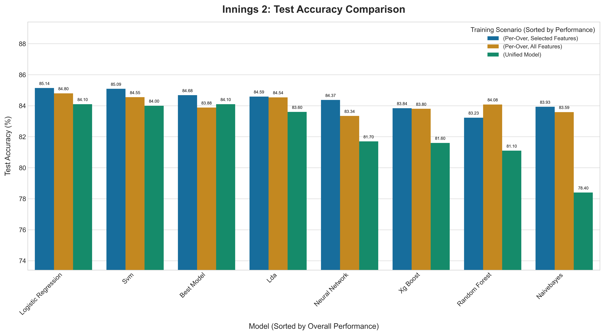

About Me
I am a Computer Science and Engineering student at the Indian Institute of Science Education and Research, Bhopal. My primary areas of interest include Deep Learning, Efficient AI for Edge Devices, Federated Learning, Statistics, and Game Theory. Below you will find a summary of my projects, skills, and academic background.
Projects
Localised learning in classification and Regression Tasks
This research explores alternatives to traditional back-propagation in neural networks, aiming to reduce computational and memory overhead. We implemented and analyzed novel training strategies, such as those inspired by "NoProp," to understand their efficiency and accuracy. The project's goal is to make model training more scalable and accessible, particularly for complex models like Vision Transformers, by developing block-wise local training methods that are less resource-intensive yet maintain high performance.

Adaptive model outcome prediction and SHAP analysis in cricket ODI match
This project focused on predicting the outcomes of One Day International (ODI) cricket matches with high accuracy. We developed an adaptive system that deploys various machine learning models, including XGBoost and Neural Networks, switching between them over-by-over based on performance. By using SHAP (SHapley Additive exPlanations), we gained deep insights into which in-game features most significantly influence the match outcome. This work is useful for creating more dynamic and precise predictive tools for sports analytics.

Vehicle detection and speed tracking
The purpose of this project was to build an automated system for monitoring traffic flow and enforcing speed limits. By training a YOLOv8 model, we achieved real-time vehicle detection and classification from video feeds. The system uses perspective transformation to accurately calculate the speed of each vehicle as it passes through a user-defined zone. This technology is highly valuable for intelligent traffic management systems, enhancing road safety and surveillance capabilities.
Dimensionality Reduction Analysis
High-dimensional data can be computationally expensive and difficult to interpret. This project provides a comparative analysis of key dimensionality reduction techniques like PCA, LDA, and t-SNE. We applied these algorithms to various datasets to evaluate their effectiveness in preserving important data structures while reducing complexity. The work serves as a practical guide for selecting the appropriate technique for feature extraction and data visualization in machine learning workflows.
Crater and Boulder Detection on Planetary Surfaces
This project automates the identification of geological features from planetary images, a critical task for rover navigation and scientific analysis. We implemented a computer vision pipeline using the Canny edge detector and Circular Hough Transform to accurately locate craters and boulders. This automated approach is far more efficient than manual analysis, enabling faster mapping of extraterrestrial surfaces and aiding in the selection of safe landing sites for future missions.
Image Classification with SIFT, BoW, and HOG
This project delves into classical feature-based image classification methods. We implemented the Scale-Invariant Feature Transform (SIFT) to extract robust keypoints from images, which were then clustered into a "Bag of Visual Words" (BoW). By creating histograms from these visual words, alongside Histogram of Oriented Gradients (HOG) features, we built a powerful model for classifying images. This work is fundamental to understanding the building blocks of many modern computer vision systems.
Data Visualisation: Energy, Occupancy, and Weather
The goal of this project was to uncover hidden patterns and relationships within complex, multi-source datasets. By merging and visualizing data on energy consumption, building occupancy, and corresponding weather conditions, we aimed to identify key factors influencing energy usage. This type of analysis is crucial for developing smarter, more efficient energy management systems and promoting sustainable building practices through data-driven insights.